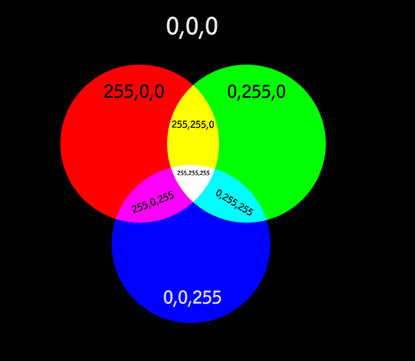
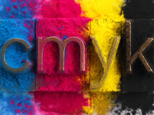

De basis van kleurmodellen, RGB, CMYK en meer:
In een computer worden niet alleen letters gelezen (gecodeerd), maar ook kleuren. Het is een systeem om kleuren
digitaal maar ook op papier (printer) te beschrijven met behulp van parameters. De drie hoofdmeters voor computers (schermen) zijn
rood, groen en blauw (RGB). Voor het drukwerk (printers) zijn er andere hoofdmeters, namelijk: cyaan, magenta, geel en zwart (CMYK).
RGB:
De afkorting RGB staat voor rood, groen en blauw. Het is een kleursysteem voor het produceren van kleur en licht (televisies, telefoons, schermen...)
Het is een kleursysteem waar de begin kleur ALTIJD zwart is. Door het toevoegen van licht kunnen andere kleuren worden gemaakt.
De computer kan alleen de drie hoofdkleuren toevoegen: rood, groen en blauw. Hiermee kan de computer (bijna) alle kleuren maken.
Wit maak je bijvoorbeeld door alle 3 de hoofdkleuren bij elkaar te mengen.

CMYK:
CMYK staat voor de kleuren cyaan (lichtblauw-groen), magenta (paars-rood), yellow (geel) en key (zwart). Het is een kleurensysteem dat wordt gebruikt om kleuren
te afdrukken op het drukwerk (folders, flyers, papieren teksten / plaatjes...). In tegenstelling tot RGB heeft CMYK geen beginkleur. Bij het CMYK-systeem combineer je dus
deze 4 hoofdkleuren om kleuren te creëren. vervolgens wordt dit door een printer op papier aangebracht.
